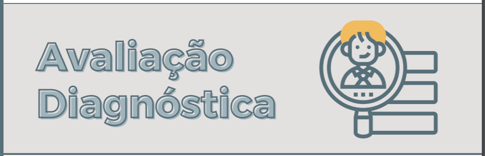

Rua Curitiba s/nº - bairro Menezes Ribeirão das Neves

A Secretaria de Educação solicita sua participação em uma avaliação diagnóstica, para isso vamos seguir os seguintes passos:
1º Você deverá instalar o aplicativo Conexão Escola, clique no ícone Conexão Escola a seguir;
2º Para acessar a avaliação você precisará saber seu número de matrícula na escola. Clique no ícone matrícula a seguir e preencha com seus dados,
ao final ele demonstrará sua matrícula.
3º Agora você seguirá o passo a passo no aplicativo Conexão Escola, para isso siga as instruções descritas no vídeo a segui: